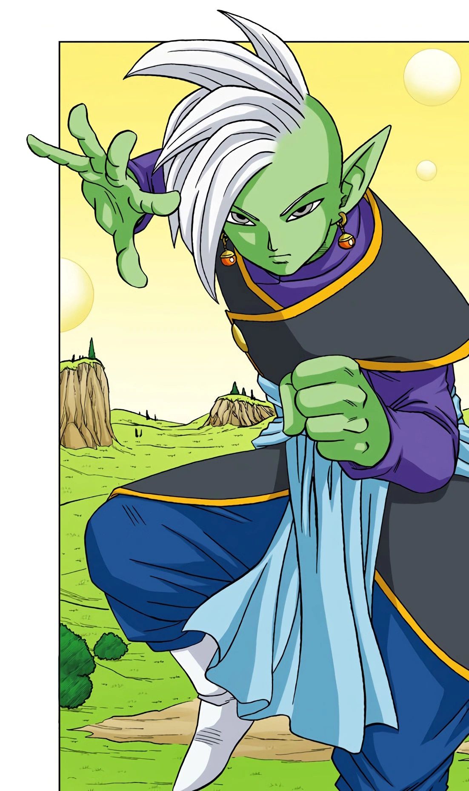

Zamasu (ザマス Zamasu) is the Supreme Kai apprentice serving the Supreme Kai of Universe 10, Gowasu.
He is also the former North Kai of Universe 10.
Generally, Zamasu is shown to be a very calm and methodical person, as shown in combat when carefully perceiving his opponent's attack style and seamlessly countering in a fluid manner.
While a man who cares for the development and prosperity of the universe, Zamasu often questioned the worth of mortals, not trusting in their ability to handle conflict as they were prone to commence war in a repeated cycle and not understanding that mortal life was key to the prosperity of the universe.
He unfortunately possessed a questionable sense of justice believing that it would be more better to just to kill them off, to keep them from making the same mistakes.
He also did not agree with how the Kais would not be more directly involved in mortals' actions, like the Gods of Destruction.
In the manga, he is even shown to scoff at the idea that mortals can be trusted to handle important matters, let alone rival the might of gods whom he viewed as the ultimate lifeforms.
Despite this, he acknowledged his lack of personal experience and was willing to diligently listen to his teacher Gowasu's words, to which he was a humble and level-headed man with just goals, as Gowasu noted by how well-balanced he would brew tea, implying that he was a just man.
After meeting Goku in the anime, however, his views changed, radically, and his distrustful nature towards mortals only grew.
Annoyed at Goku's carefree attitude and lack of respect, his distaste for the gods protecting mortals grew and his negative view of mortals reached zealotry levels.
Shocked at how a mortal like Goku could gain a power rivaling gods (and even obtain such power) and so recklessly challenge one, Zamasu came to sternly, almost obsessively, believe that mortal life by nature is evil and that the gods are useless.
He also resented the fact that he had lost to Goku.
In the manga, Zamasu never met Goku in person until after he stole his body, as he had learned of Goku's existence and acquisition of godly power through observing the Tournament of Destroyers on GodTube.